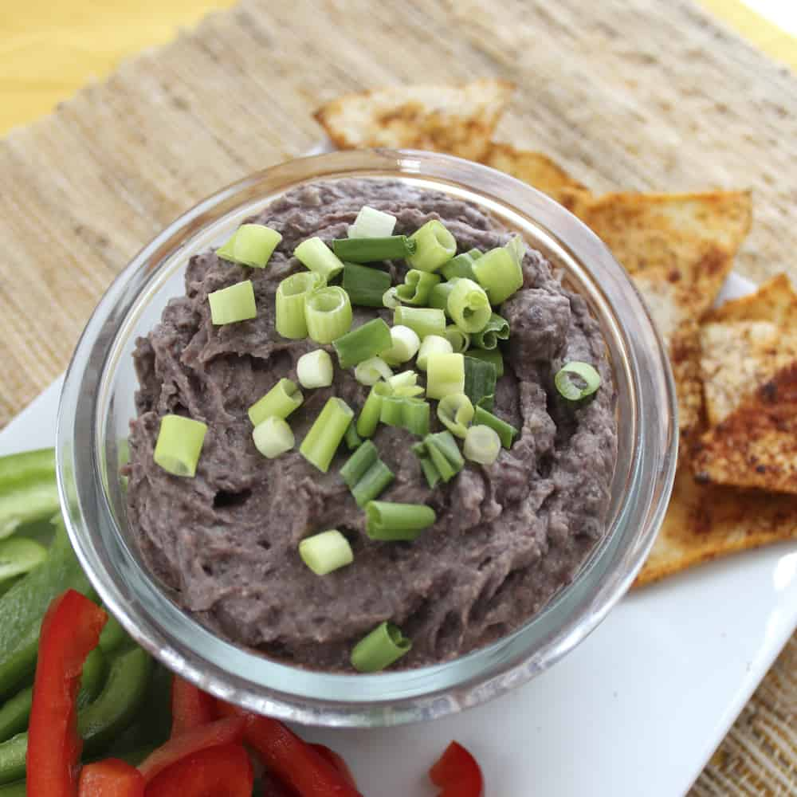

Bean Dip Recipe

A simple and easy recipe for a yummy vegan bean dip.
The veg-head in me is annoyed that I must clarify that a dip made of beans is vegan.
But one can never underestimate omnis from adding animal products into everything.
- Two cans of refried beans
- One can of black beans
- One can of salsa
- One can of black olives
- Olive oil, lime, salt, pepper, cumin, oregano onion powder, and garlic powder to taste
Steps
- Add beans and salsa into a bowl
- Slice olives and add
- Combine the rest of the ingredients and wa la!
Return to main page